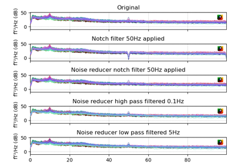
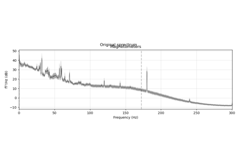

jumeg
0.18
Examples
API
GitHub
Site
Page
Preprocessing
Plot suggest bads.
Plot suggest bads.
Plot and interpolate bads
Plot and interpolate bads

Plot noise reducer
Plot noise reducer

Filtering in jumeg.
Filtering in jumeg.